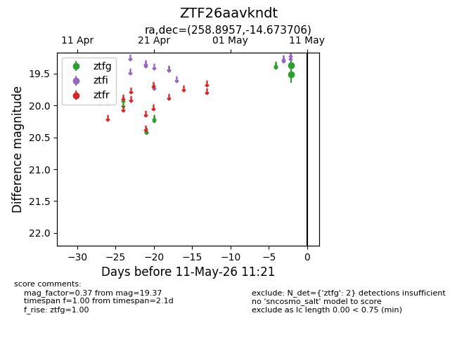
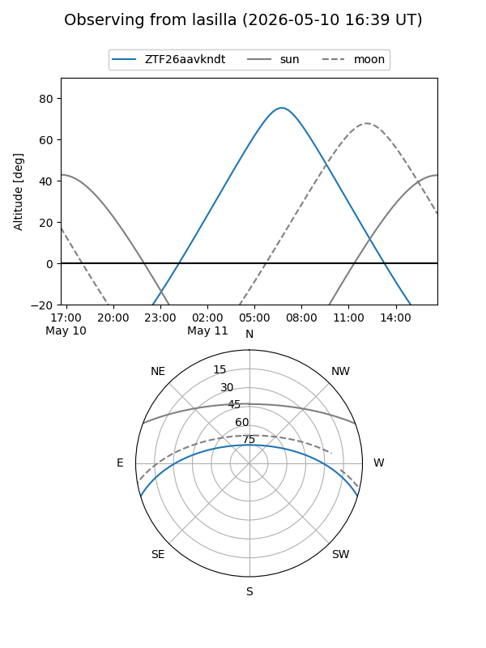
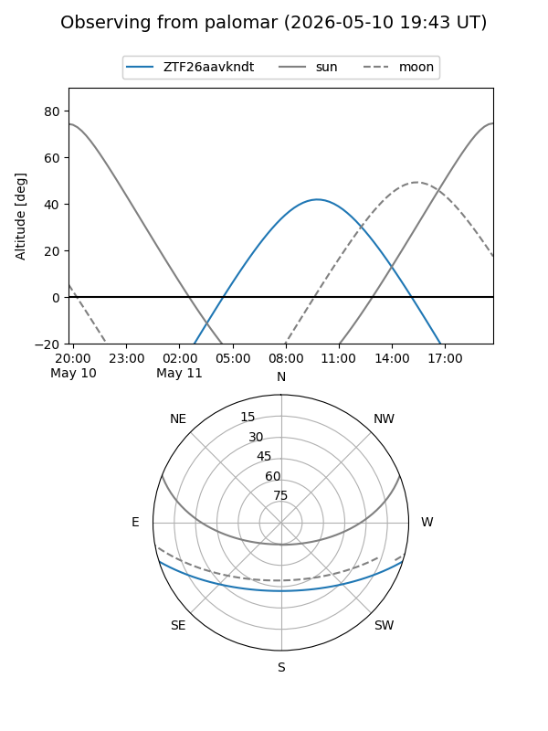

ZTF26aavkndt
Target ZTF26aavkndt at 2026-05-11 11:24
Aliases and brokers:
FINK: link
Lasair: link
ALeRCE: link
alt names
ZTF26aavkndt (ztf,fink_ztf)
Coordinates:
equatorial (ra, dec) = 258.8957,-14.67371
equatorial (HMS+DMS) = 17:15:34.97,-14:40:25.34
galactic (l, b) = (8.3383,+13.54326)
Flags:
Photometry:
last ztfg=19.37
2 ztfg detections
Lightcurve

Visibility


Additional plots